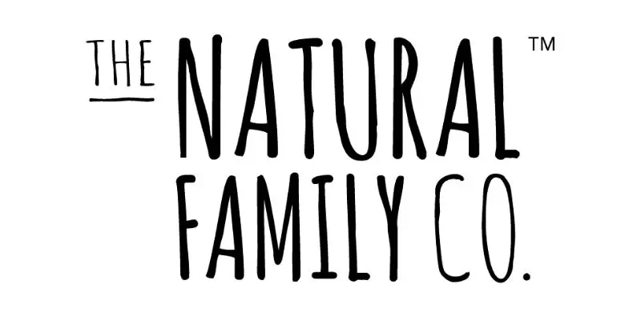
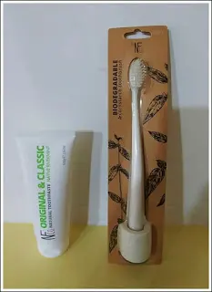
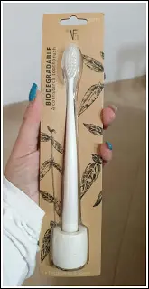
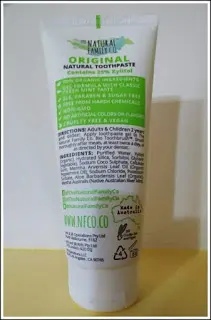

The Natural Family Co

The Natural Family Co, dopo un bel pò di tempo mi faccio perdonare parlandovi di un prodotto che interessa tutti. L'igiene orale e l'amore per la protezione dell'ambiente. Infatti, i prodotti in questione sono uno spazzolino e un dentifricio dell'azienda The NATURAL FAMILY Co Un dentifricio adatto a tutta la famiglia e che non inquini l'ambiente, oggi si può. Questo dentifricio che proviamo oggi è del tutto biodegradabile. Inventato dagli australiani e usato dagli stessi, questo gel per i denti è privo di fluoro, SLS, parabeni e sostanze chimiche aggressive.
La sua formula dal sapore aromatico fresco, viene utilizzato dagli australiani indigeni a scopo medico.
Contiene il 25% di xilitolo ed è adatto anche per i vegsni. Non contiene zuccheri, è senza glutine ed è privo di coloranti.
Insomma, del tutto naturale e pronto per una cura dell'igiene orale.

Prezzo: 9,95 € Acquistabile sul sito http://nfco.co/nfco/shop/toothpaste/original-toothpaste-the-nf-co.html
Lo spazzolino coordinato, che ho avuto il piacere di provare, è un semplice spazzolino bianco.
Il manico è stato realizzato interamente da amido di mais e le setole in nylon.
Nel caso pensiate che l'involucro in cartone possa inquinare, non vi preoccupate, anche la scatola che contiene po spazzolino, è un prodotto biodegradabile.

Prezzo: 8,95 €
Acquistabile sul sito http://nfco.co/nfco/shop/toothbrushes/bio-toothbrush-stand-cream-the-nf-co.html

Inoltre, il sito dispone di un negozio online con tanti altri dentifrici e spazzolini. C'è una linea di colore nero davvero bellissima. Di un'eleganza unica, indicata secondo me, ad una sala bagno.
Vi lascio qui il negozio direttamente